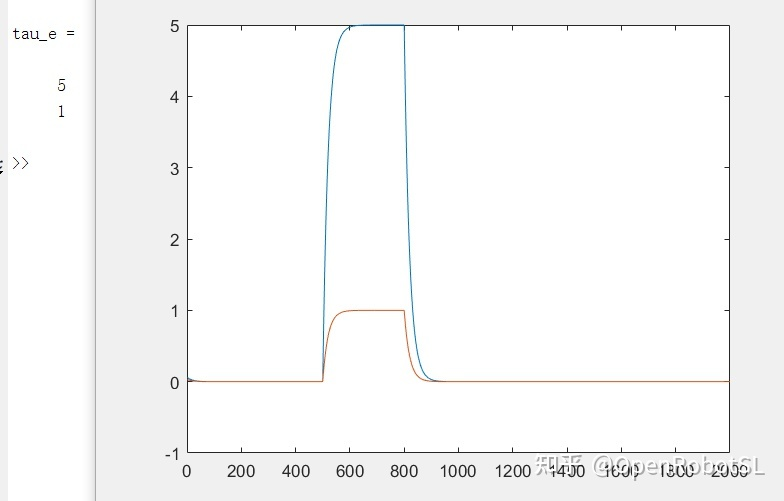
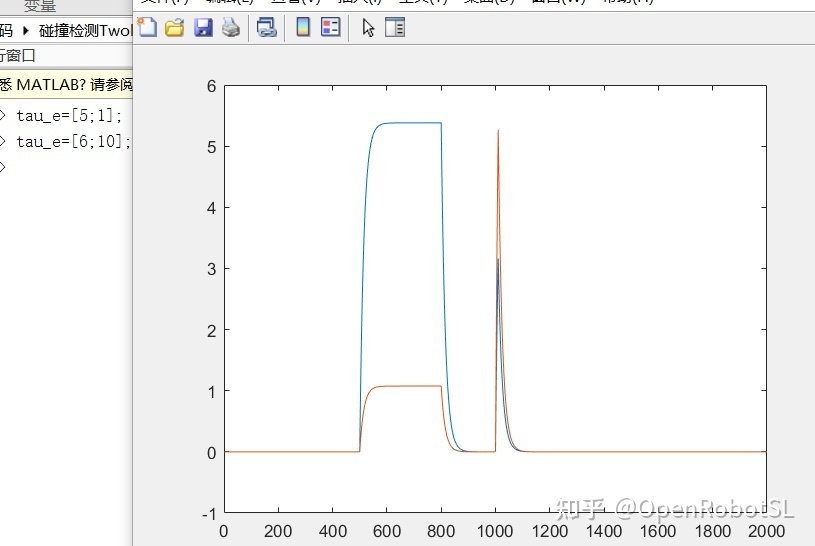
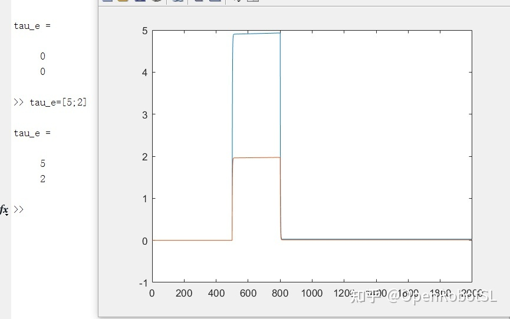
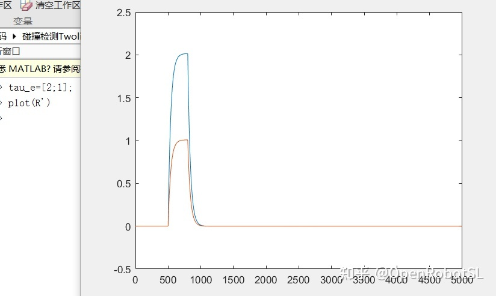

Home
本文转载自： https://zhuanlan.zhihu.com/p/382099151
DEMO视频，基于视觉碰撞检测
https://www.zhihu.com/zvideo/1389560940870848513目前基于动力学模型得观测器 估计碰撞，外力完全依赖于全动力学参数辨识，这一部分前面介绍过。
目前科研上主流通过观测器，滤波器，非线性估计外力，卡尔曼调参挺难得，又依赖于全动力学结果。
工程就简单了。超了模型就是撞撞撞。
分享以下很早之前做测试过得观测器类型结果
1介，很容易能接近于估计外力实际大小，缺点很容易受到噪声干扰。

2介，分类型
有点能平滑估计外力作用，但是对于准确数值还是不行，并且参数比较难调

近似能估计数值，但是不平滑，突变比较明显，这样就容易干扰

如果碰巧参数调好了 比1介强很多

======================================================================
我的测试结果及程序
下面是我测试的代码：